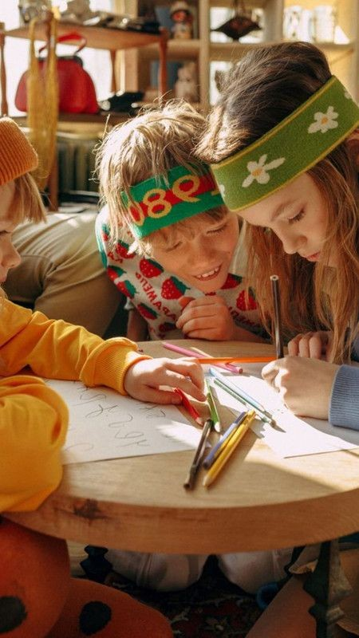
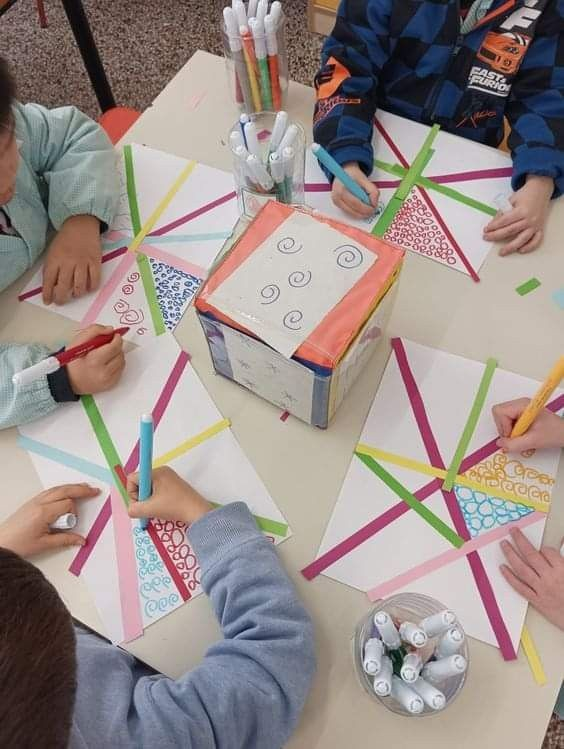
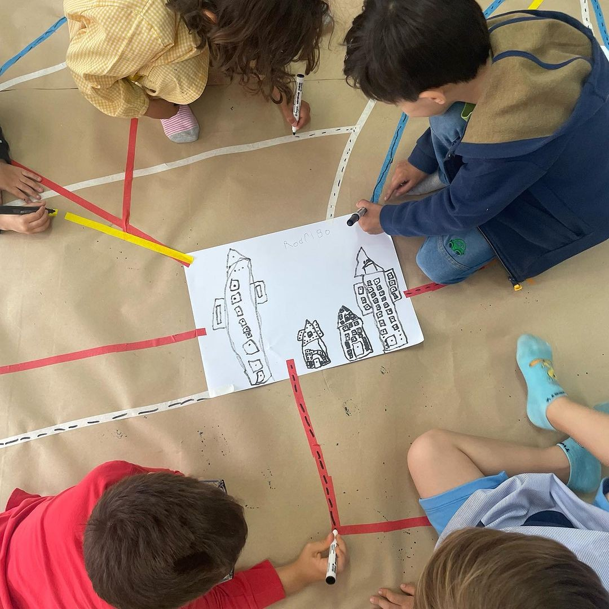
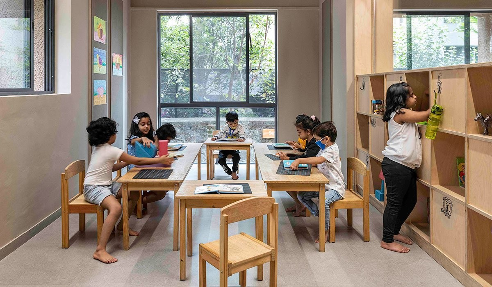

Ms. Rachel Huynh
faith · learning · belonging
St Kevin's is a Christ-centred Catholic primary school where every child is known, valued and supported to flourish. In our diverse Hampton Park community, faith, learning and belonging come together to shape young people who grow in confidence, compassion and purpose.

Jason Micallef · Principal
Welcome to St Kevin's. Our school is a place where children are supported to grow academically, socially and spiritually, surrounded by a community that believes deeply in their potential. What I value most about our school is the way people care for one another. When families, teachers and students work together with trust and purpose, remarkable things happen.
— Jason Micallef | Principal
Our staff share a deep commitment to the growth and wellbeing of every child. Working together across Foundation (Prep), Junior (Gr 1 & 2), Middle (Gr 3 & 4) and Senior levels (Gr 5 & 6), our teachers and support staff create learning environments where students feel safe, challenged and inspired.
Our Foundation team welcomes children into their first year of school with warmth, patience and a deep understanding of early learning. They create safe and joyful classrooms where curiosity, confidence and independence begin to grow.
First stories. First friendships. First days of school.

Our Junior team helps students build strong foundations in literacy, numeracy and learning habits that will carry them through their schooling. These classrooms are full of questions, discovery and the excitement that comes when children begin to realise what they are capable of.
The moment when learning starts to click.
The Middle team supports students as their confidence and independence grow. Learning becomes deeper and more collaborative as students explore ideas, ask thoughtful questions and begin to see themselves as capable learners.
Questions get bigger. Thinking gets deeper.


Our Senior team prepares students for the transition to secondary school while nurturing leadership, responsibility and strong learning habits. Students are challenged to think critically, take ownership of their learning and contribute positively to the school community.
Growing into confident learners and leaders.
Our Specialist teachers bring creativity, movement and new ways of thinking into the learning experience. Through Physical Education, Performing Arts, Visual Arts, STEM, Languages and Critical & Creative Thinking, students discover new talents, interests and ways to express themselves.
Ms. Rachel Huynh
Mr. Daniel Walsh

Ms. Priya Sharma
Creativity, movement and discovery.
Behind every great school is a team of people working together to support students and families. Our leaders, coaches, administration team, library staff and intervention specialists help ensure every child is known, supported and able to thrive.
Mrs. Karen Walsh
Mr. James Nguyen

Ms. Fatima Al-Hassan
The people who make everything work.
St Kevin's Primary School is part of the St Kevin's Parish community. Our close partnership with the parish supports the faith formation of our students and connects school life with the wider spiritual life of the community.